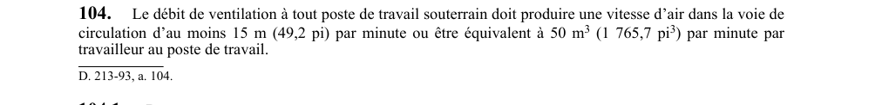

art-104-RSSM : débit ventilation poste travail souterrain
Un article du wiki ⚖️ Recueil législatif
En bref
Le débit de ventilation à tout poste de travail souterrain doit produire une vitesse d'air d'au moins 15 m. Cette obligation vise l'employeur.
- Dans un montage, le débit doit assurer au moins 5 changements d'air à l'heure.
- Vitesse d'air ≥ 15 m (49,2 pi)/min ou ≥ 50 m³ (1 765,7 pi³)/min/travailleur.
- dans un montage : ≥ 5 changements d'air/heure, canalisation d'air comprimé à < 6,1 m (20 pi) du front.
🌐 LegisQuébec · 📄 PDF officiel
Texte officiel : capture du PDF
{kind=link}

Toucher l'image pour l'agrandir🔗 Voir art. 104 RSSM dans le PDF (page 40)
Version : texte officiel du RSSM (RLRQ c. S-2.1, r. 14), à jour au 1er mai 2024 — Éditeur officiel du Québec
Voir aussi
- art. 102 : conditions utilisation moteur diesel souterrain · obligation : tout moteur à combustion interne sous terre doit être de type diesel et son utilisation est soumise à des conditions strictes : dilution des contaminants sous 0,4 mg de carbone total par m³ d'air mesurés selon la méthode NIOSH 5040.
- art. 103 : mesures d'air des moteurs diesels · obligation : le débit d'air alimentant une zone diesel sous terre doit être mesuré et inscrit au registre au moins une fois par semaine.
- art. 105 : arrêt moteur diesel panne ventilateur · obligation : dans une mine souterraine, tout moteur diesel se trouvant dans la zone affectée par l'arrêt d'un ventilateur doit être arrêté dans un délai de 15 minutes.
- art. 106 : interdiction sautage ventilateur non opérationnel · obligation : aucun sautage ne doit être effectué dans une zone lorsque le ventilateur la desservant n'est pas opérationnel.
- ⚖️ Loi habilitante : LSST
- ↑ Index du bloc : Ventilation et qualité de l'air
Pages qui pointent ici (5)
- art-102-RSSM : conditions utilisation moteur diesel souterrain Recueil législatif
- art-103-RSSM : mesures d'air des moteurs diesels Recueil législatif
- art-105-RSSM : arrêt moteur diesel panne ventilateur Recueil législatif
- art-106-RSSM : interdiction sautage ventilateur non opérationnel Recueil législatif
- RSSM : Ventilation et qualité de l'air (art. 100 à 130) Recueil législatif